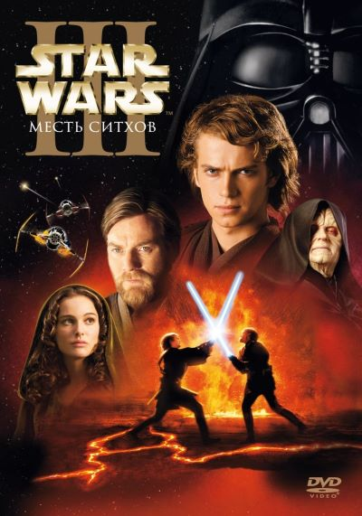
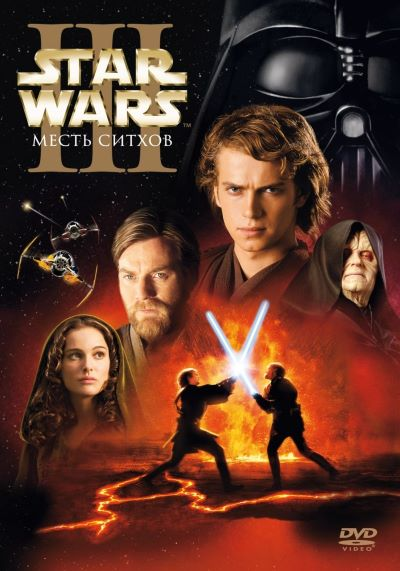

Джордж Лукас
История
«Звёздные войны» (англ. Star Wars) — североамериканская фантастическая медиафраншиза, созданная Джорджем Лукасом.
Первое произведение франшизы, роман научно-фантастического жанра, вышло в свет в 1976 году, а успех к ней пришёл в 1977 году с выходом на экраны фильма «Звёздные войны» (который позже получил подзаголовок «Эпизод IV: Новая надежда»), и моментально стала феноменом массовой культуры. Затем последовали успешные продолжения: «Империя наносит ответный удар» (1980 года) и «Возвращение джедая» (1983 года); все три фильма формируют так называемую оригинальную трилогия. Позже, в период с 1999 года по 2005 год, вышла трилогия фильмов ведущая повествование во времена, предшествующие событиям оригинальной трилогии. Подробнее с фильмамим киносаги Вы можете ознкомиться на следующей странице.
«Звёздные войны» стали одной из крупнейших медиафраншиз мира и получила значительное развитие благодаря фанатам и поклонникам. «Звёздным войнам» даже принадлежит рекорд в «Книге рекордов Гиннесса», как «Наиболее успешная медиафраншиза по фильмам».
Звёздные Войны охватывают

 

Фильмы и сериалы


Книги и комиксы


Игры

тематические парки
Звёздные Войны в цифрах
2
оскара
7,5млрд
долларов собрано в прокате
3-ье
место среди кинофраншиз по прибыли
42млрд
долларов стоимость франшизы
Место действий
События франшизы «Звёздные войны» происходят в удалённой вымышленной Галактике в далёком прошлом. В ней сосуществуют множество существ и инородцев (чаще всего гуманоидов). Жители Галактики владеют роботами, которых здесь называют дроидами, которые помогают им с ежедневными делами, а космические путешествия являются обыденностью.

Джедай Йода
Сила
Духовным и мистическим элементом Вселенной «Звёздных войн» является «Сила». В оригинальном фильме её описывали как «энергетическое поле, создаваемое всеми живыми существами. Она окружает и пронизывает нас. Она связывает Вселенную воедино». Те, кто имел связь с Силой с рождения, обладали улучшенными рефлексами, а благодаря тренировкам и медитациям они могли достичь различный сверхъестественных умений (таких как телекинез, ясновидение, прекогниция и контроль разума). Существует две основные группы владеющие Силой: джедаи, которые используют светлую сторону Силы, и ситхи, обращающиеся к тёмной стороне Силы.
Джедаи распоряжались своими возможностями с целью служения обществу, защиты прав и свобод разумных рас, а также оберегали живую природу и старались поступать по справедливости в целом.
Основной идеей тёмной стороны силы служило преобразование своих эмоций, в частности, негативных, таких как страх, гнев и ненависть, в источник увеличения собственной мощи, для достижения, в основном, могущества.

Ситх Дарт Сидиус